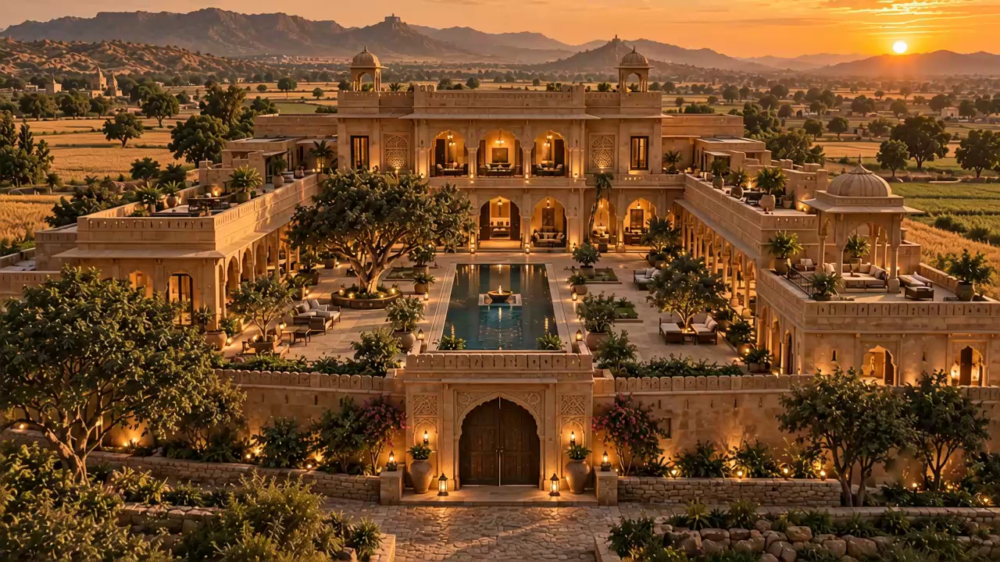
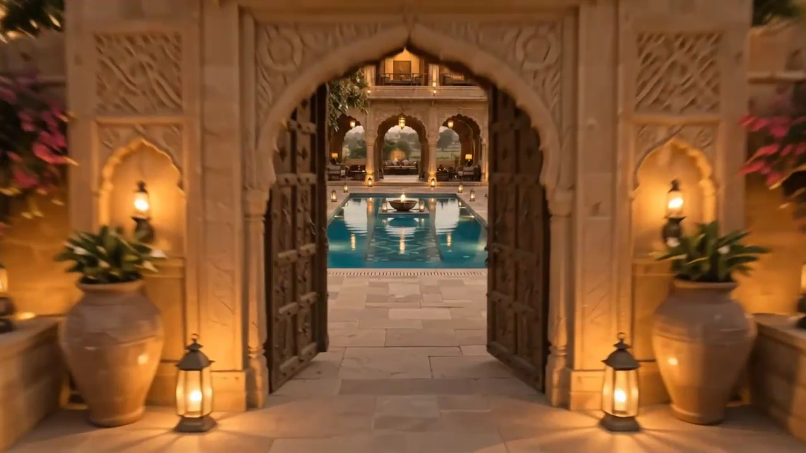
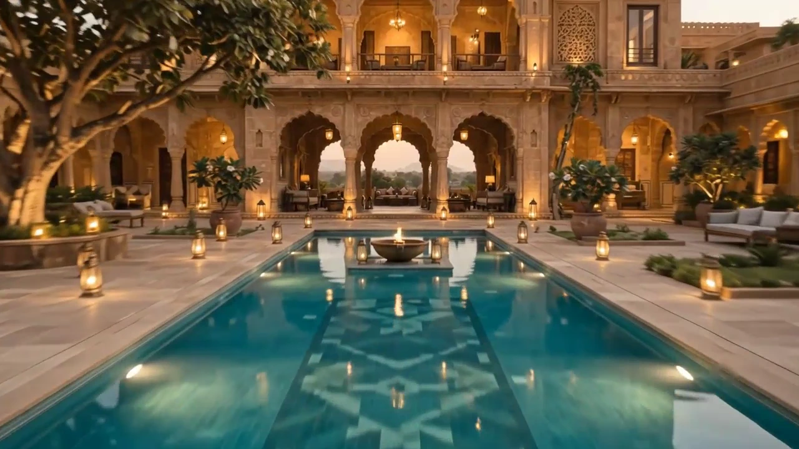
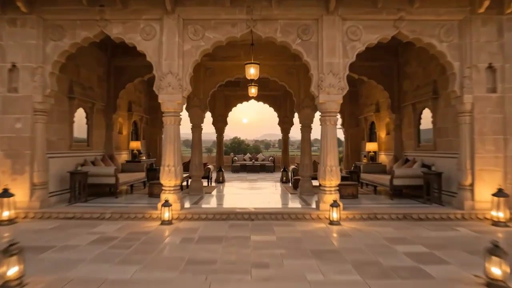
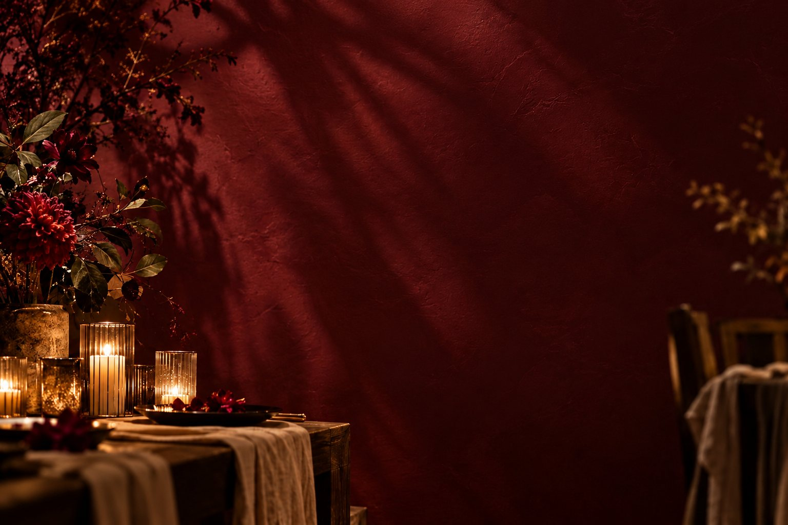
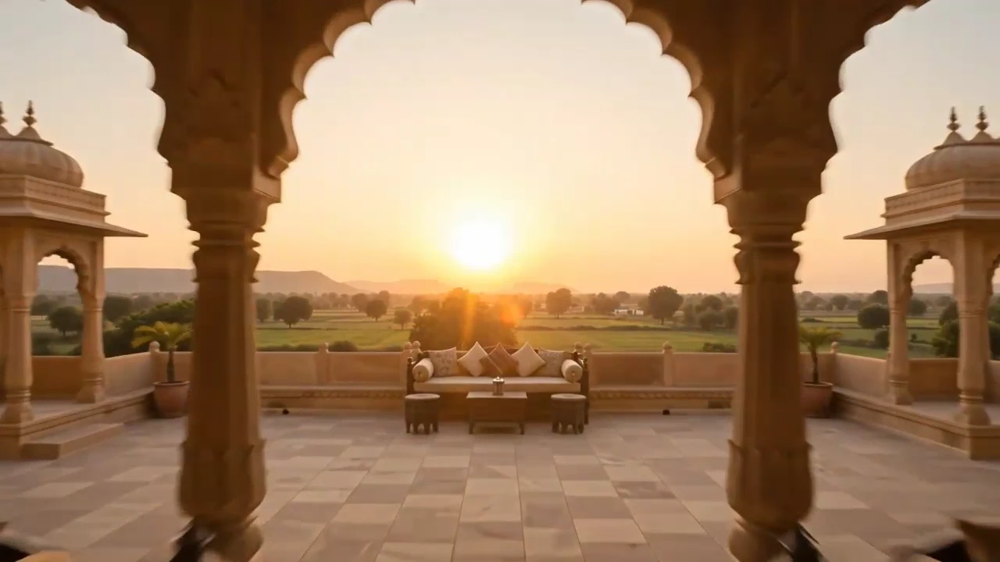
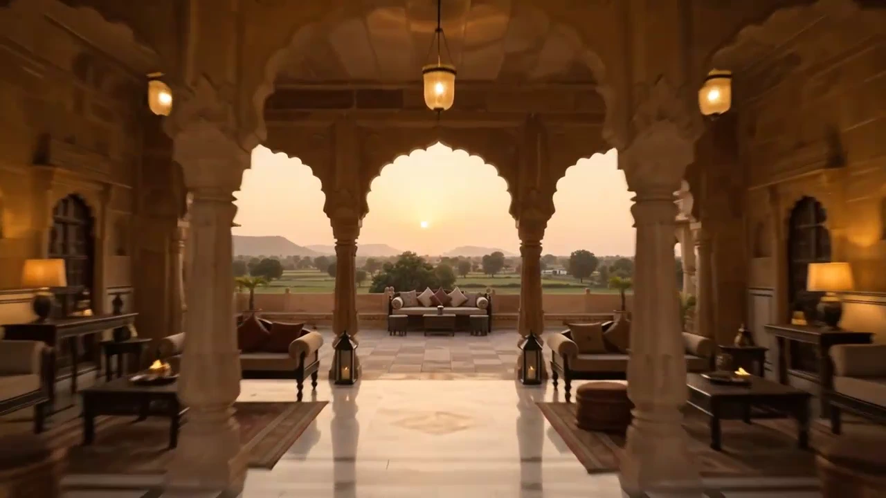
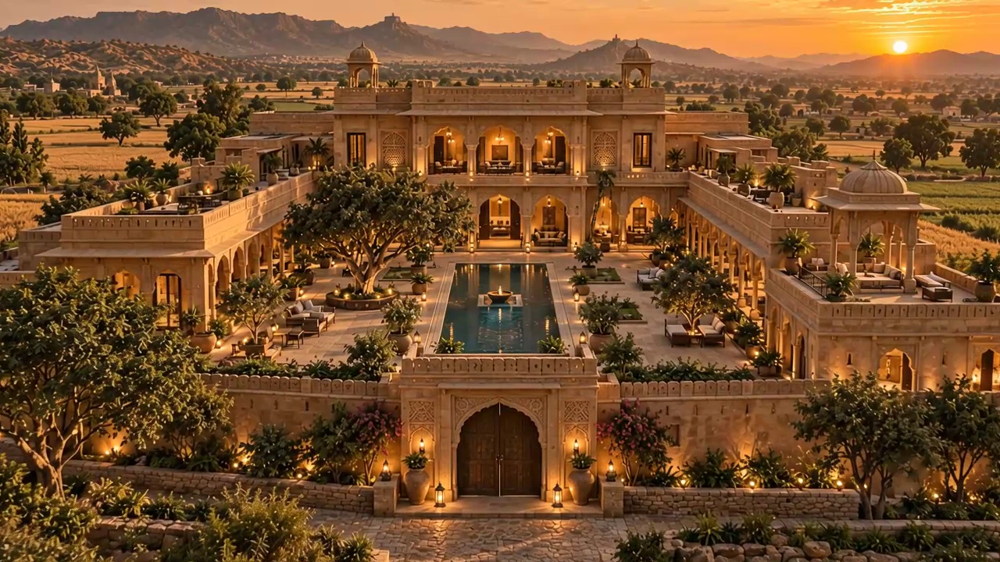

Kankana
Where the desert
keeps its gold.
Why Kankana?
Chosen for ritual. Designed for gathering.
Kankana is where a celebration becomes a way of remembering.
Doors that open
for you alone.
Carved teak and lantern-lit thresholds, opened at dusk for your baraat.
A courtyard built
to hold the evening.
Still water, floating diyas and a long table laid along its edge.
Every arch,
one view.
Pheras beneath carved pillars, with nothing ahead but sky.
Stay until the sun
clears the fields.
Mornings after, slow and golden — the celebration continues.
Step insidethe celebration.
Four occasions, and the lives they are drawn around.
Twelve waysto celebrate.
From the first haldi at seven to lanterns at midnight — scroll through a Kankana wedding day.
Haldi Morning
Turmeric, laughter and marigolds under the banyan.
Poolside Brunch
Slow coffee, fresh fruit and the family arriving.
Mehndi & Dholki
Henna, songs and stories, one hand at a time.
Welcome Lunch
Two families, one long table.
Getting Ready
Silk, jewels and a quiet room full of light.
The Bride
A last look in the mirror. The moment everyone waits for.
Baraat at the Gate
Dhol at the gate, the doors thrown open.
Pheras at the Mandap
Seven steps around the fire, as the light turns gold.
Sunset on the Terrace
Portraits framed by the arches, the fields on fire.
Water-Court Cocktails
Floating diyas and the first toast.
Reception & Sangeet
Speeches, the first dance, and every cousin on the floor.
Lantern Send-off
Lights on the water as the day becomes a memory.







And then,a slower day.
A slower
kind of
celebration.

Lanterns lit, doors open, nothing to rush.
Find your
rhythm.


A little movement.
A moment of stillness.

Room to
dance.

Make time for the floor.
Your own momentum.

Time to
exhale.
Warmth. Quiet.
A welcome pause.
Simply be.
Leave the hurry
at the door.

Nothing to do.
Everything to feel.
Less rush.
More Kankana.

Above the
everyday.
A table for friends.
An evening that lingers.
Time to connect
For everygeneration.

Room for their stories.
A little time for yours.


The luxury of
coming home
Natural light.
Thoughtful spaces.
A stay that feels like you.
Explore stays →
Life,considered.

The thoughtful details
that make a celebration.
Six private villas and twenty guest rooms, steps from every venue.
From haldi to farewell, planned by one team throughout.
Tasting menus and live counters, cooked on site.
Flowers and details arranged by hand for every celebration.

Your celebration.Within reach.
Water Court · Colonnade · Pavilions · Terrace
Reception Hall · Dining Hall · Amphitheatre
6 private villas · 20 guest rooms
The Café · Turf · Pickleball court
Venues, villas, a café and a court.
One family of celebrations.
Everythingwithin reach.
Every space, drawn around one celebration.
- The Water Court
- The Colonnade
- Garden Pavilions
- Sunset Terrace
- Reception & Dining Halls
- Amphitheatre
- Villas & Rooms
- Café & Courts